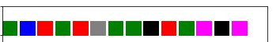
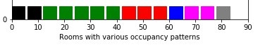

We've gathered dataset of the sensors bordering with Meeting and Discussion rooms and having big open area with 9 desks(which will be treated as private office spaces with its own occupancy patterns)
Since, we assume each office (essentially occupied by he same people assigned to the space) has some occupancy profile. We've developed clusterization of these occupancy profiles room by room.

Explanation
Figures depict office spaces(colored squares), where color means a particular occupancy pattern. The idea is to rearrange people is such a way so that they have neighbours with similar occupancy patterns(as depicted in 2nd plot). Such rearrangement potentially may give lots of benefits for other building systems: thermal energy, electrcity loads matching, allowing more uniform load distributions across the building